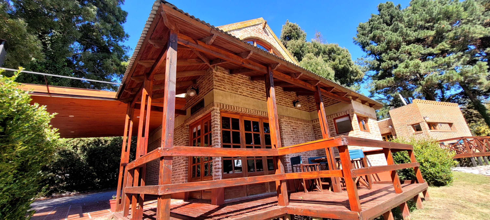
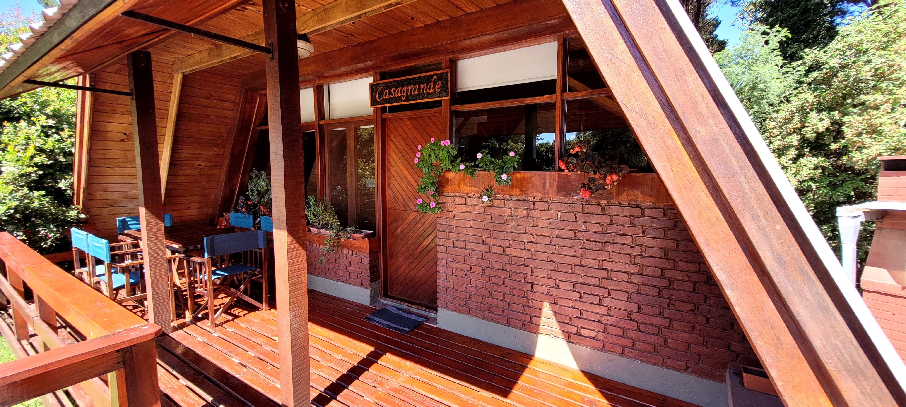

Cabañas
Del Pinar

Monoambiente amplio, con capacidad para alojar hasta 4 personas. Muy confortable construcción, con todas sus instalaciones en planta baja, con ladrillo vista exterior e interior.
Tiene 58 mts2 de superficie habitable y todos sus pisos en un mismo nivel. Posee grandes ventanales y puertas-balcón vidriadas, que le otorgan una gran luminosidad interior. Cochera individual adjunta, con parrilla individual, deck de madera con mesa, sillas y sombrilla con vista a los jardines del predio.
Del Solar
Hermosa construcción de dos plantas, con capacidad para alojar hasta 5 personas. En la planta alta tiene un amplio dormitorio, donde se ubican una cama sommiers de 2 plazas y media y una cama de una plaza.
En la planta baja : Sala de Estar, donde se ubican un sofacama de una plaza y otra cama desplazable de una plaza. Comedor diario, cocina y baño completo.
Deck techado de madera, con mesa, sillas y vista panorámica a los jardines del predio. Cochera techada individual y adjunta a la cabaña. Parrilla individual.
Del Puente

Una espléndida y moderna construcción, monoambiente, ideal para 2 personas, o bien para pareja con bebé...
Posee 38 mts2 de superficie habitable, con todas sus instalaciones en planta baja. Con un hermoso Deck techado, demadera, con un muy pintorescopuente de madera exclusivo para la cabaña, con rosales en su pérgola..
Cochera individual y adjunta, protegida por la frondosa copa de dos acacias. Parrilla individual.
Casagrande
Tiene capacidad para alojar hasta 6 personas. Posee dos plantas, ideal para un grupo familiar grande o para dos familias. Es una magnífica construcción de estilo alpino, con 103 mts2 de superficie habitable, y con finas maderas en su interior.
Tiene dos dormitorios de gran categoría en su planta alta. En planta baja : Sala de Estar con sillones de algarrobo, comedor diario, cocina y baño completo; deck de madera techado con mesa y sillas... y vista panorámica al jardín del predio y a las serranías cercanas.
Tiene cochera adjunta techada e individual, y parrilla techada familiar, con amplia mesada.
Ir arriba